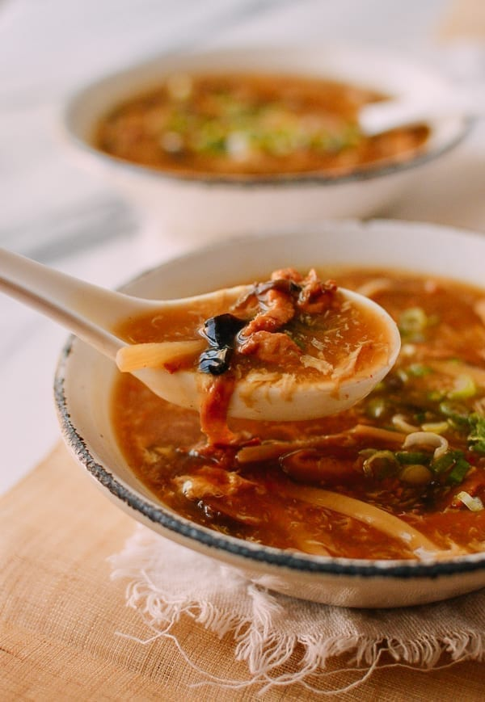

Hot and Sour Soup Recipe
Hot and Sour Soop

Description
Just like you get with your Chinese takeout. There are a lot of
ingredients and a lot of steps, but its worth the effort if you
like to have this zesty treat on hand.
This recipe requires a lot of ingredients so be sure to keep your larder stocked
so you can create this culinary classic whenever you have the urge.
Ingredients
- 4 oz. pork shoulder (finely julienned)
- 1 tablespoon water
- Pinch of salt
- 2 teaspoons vegetable oil
- 1 teaspoon cornstarch
FOR THE SOUP:
- 1 to 2 dried red chili peppers (optional)
- 0.3 ounce dried lily flower (rehydrated, ½ cup after rehydrating)
- 0.3 ounce dried wood ear mushrooms (1/2 cup after rehydrating & slicing)
- 0.3 ounce dried shiitake mushrooms (1/2 cup after rehydrating & slicing)
- 3 ounces spiced dry tofu
- 4 ounces fresh firm tofu
- 4 ounces bamboo shoots
- 1 large egg
- 1 scallion (finely diced)
- 8 cups low sodium chicken stock
- ½ teaspoon salt (or to taste)
- ¼ teaspoon sugar
- 1 to 2 teaspoons fresh ground white pepper (or to taste)
- 2 teaspoons dark soy or mushroom soy sauce
- 1 tablespoon light soy sauce or seasoned soy sauce
- 1 teaspoon sesame oil
- 1/3 to ½ cup white vinegar
- 1/3 cup cornstarch
- ¼ cup water
Steps
PREPARE YOUR PORK:
- Combine the 4 oz. julienned pork shoulder with 1 tablespoon water until the meat has
absorbed the water. Add a pinch of salt, 2 teaspoons vegetable oil, and 1 teaspoon
cornstarch and mix until combined. Set aside.
PREPARE YOUR DRY INGREDIENTS:
- Cut the dried chilies in half and discard the seeds. Mince them up and set aside.
- In separate bowls, soak the dried lily flowers, wood ears, and shiitake mushrooms
in 1 cup of water each for 1-2 hours, until hydrated. Using hot water (like you’re
brewing tea) will significantly speed up the process.
- Once they’re ready, thinly slice the mushrooms and give the wood ears a rough chop.
Trim the tough ends off the lily flowers and cut them in half.
PREPARE THE TOFU AND THE REST OF THE INGREDIENTS:
- Cut both the spiced tofu and the firm tofu into 2-inch long and ¼-inch thick pieces.
Julienne the bamboo shoots. Beat the egg in a small bowl. Wash and chop the scallion
and set aside.
ASSEMBLE THE SOUP:
- Bring the chicken stock to a boil in a wok or pot. If the pork has clumped and stuck
together, it is best to add another tablespoon of water to loosen it up before adding
it to the soup.
- Stir in the pork and quickly break up any clumps that may form. Once the soup is simmering
again, skim off any foam that floats to the top with a fine meshed strainer.
- Add the salt, sugar, dried chili pepper (if using), white pepper, both soy sauces, and sesame oil.
- Next, add the lily flowers, wood ears, shiitake mushrooms and bamboo shoots and bring the soup to a
simmer once again.
- Next, add the two kinds of tofu and the vinegar and stir. It should start to look and smell like
the real thing about now!
- Combine the ⅓ cup cornstarch with ¼ cup water to make a slurry. Ensure it’s well-combined, as the
cornstarch tends to settle to the bottom of the bowl.
- Bring the mixture to a simmer and use your soup ladle to stir the soup in a steady circular
motion to make a whirlpool while slowly drizzling in the cornstarch slurry. This prevents the
cornstarch from clumping. Stop when you’re about ¾ of the way done with your slurry and keep
stirring until the soup comes back up to a simmer.
- Check the consistency of the soup, as it should be thick enough to coat your spoon or ladle.
Add the rest of the cornstarch slurry if you like it thicker.
ADJUST SEASONING:
- Once the soup is the thickness you prefer, use a spoon to check its flavor and adjust things
to your own personal preference. Add more white pepper if you like it hot and add more vinegar
if like it sour! White pepper gives the soup its signature heat, and the vinegar levels can be
adjusted according to how sour you like your hot and sour soup.
- Keep the soup simmering (it should be bubbling before you add the egg, or the soup will turn
cloudy when the egg is added), and begin stirring in a circular motion with your ladle once
again. Once you get the soup moving in a slowly swirling motion, slowly drizzle the beaten egg
into the soup.
- Serve your hot and sour soup garnished with chopped scallions!